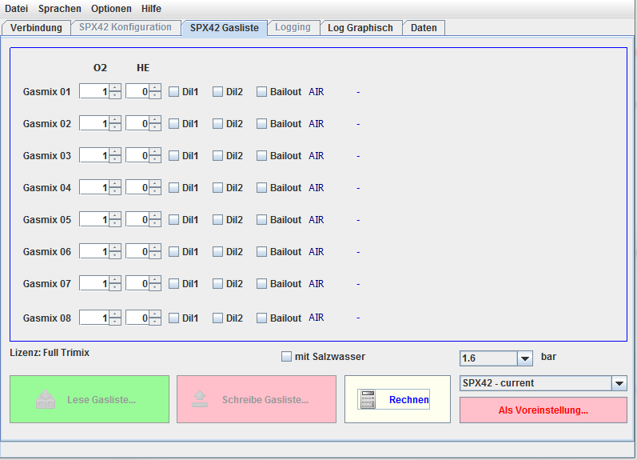

In diesem Tab sind die für das Gasmanagement des SPX42 benötigten Funktionen
zusammengefaßt. Um optisch immer darüber im Klaren zu sein, in welchem
Zustand sich die Bearbeitung (Online/Offline) befindet, ist die Gasliste
farbig eingerahmt. Ist der Rahmen BLAU dann ist
der SPX42 nicht verbunden ("offline") und es können nur
Presets bearbeitet werden. Ist der Rahmen
GRÜN eingefärbt, ist der SPX42 verbunden
("online").
Die Bearbeitung der Gase kann dann
direkt fpr den SPX42 erfolgen. die Buttons "Lese Gasliste" und
"Schreibe Gasliste" sind dann aktiviert.
Auch hier ist die Funktionalität "online" abhängig von der erworbenen
Softwarelizenz des SPX42. Offline sind alle Einstellungen möglich, online sind
nur die Lizensierten Funktionen möglich. Auch wenn Presets anzulegen sind, die
nicht dem aktuellen Lizenzmodell entsprechen, siend diese jedoch nicht ohne
Lizenz auf den SPX42 übertragbar.

Gaslisten Editor Tab OFFLINE
zum Inhalt
Die Idee hinter den Gas Presets ist die Überlegung, daß der SPX42 für
verschiedene typische Einsatzfälle schnell umkonfiguriert werden kann, ohne
jedesmal die Einstellungen zu verlieren.
Beispielsweise wechselt der Autor zwischen dem Presets für flache
Süßwassertauchgänge mit Luft als Diluent und Nitrox als Bailout und Presets
für spezielle Tauchgänge. Ein Preset ist beispielsweise für lange Tauchgänge
bis 60 Meter Tiefe mit Trimix 21/45 und zwei Bailout-Gasen.
Denkbar ist auch ein Preset für wiederholte Tauchgänge an speziellen
Tauchplätzen, die eine besondere Bailoutgas Zusammenstellung erfordern
oder ein schneller Wechsel auf ein Leihgerät.
Das Beispiel oben zeigt ein eingelesenes Preset mit dem Namen
"Standart-Trimix-Normoxic"
Eine Gasliste kann mit dem Button "Als Voreinstellung" unter einem frei
wählbaren Namen in der internen Datenbankgesichert werden, und im Onlinemodus
auch auf den verbundenen SPX42 geschrieben werden.
zum Inhalt
Die Bezeichnungen der Gase entwprechen dem üblichen Standart.
"AIR" steht für Luft (21% Sauerstoff, 78% Stickstoff, 1% Rest)
"NX" steht für Nitrox, der Zahlenwert für Prozentualen Anteil O2
"TX" steht für Trimix, erste Zahl O2, zweite Zahl Helium
"HX" Steht für Helioxm erste Zahl steht für O2, zweite Zahl für Helium
zum Inhalt
Die MOD berechnet sich für Salzwasser/Süßwasser und dem eingestellten Wert für
den maximal gewünschten Sauerstoff Partialdruck. Dieser Wert gilt für das Bailout
und das Diluent, da beim Spülvorgang kurzzeitig das reine Diluent geatmet wird.
zum Inhalt
Wenn auf den Button "Rechnen" geklickt wird, öffnet sich ein Fenster (siehe unten)
in dem Berechnungen für einzelne Gaase vorgenommen werden können.< br />
Wenn man davon ausgeht, daß im Kreislauf aufgrund des eingestellten O2-Setpoints
nicht dieselbe Gaszusammensetzung wie im Diluent herrscht (es wird je nach
Umgebungsdruck und Setpoint Sauerstoff zugegeben) ist nachvollziehbar, daß
die effektive EAD (equivalent air depth) natürlich auch nicht der des Diluent
entspricht.
In diesem Fenster kann man die effektive EAD anhand einstellbarer Parameter
ausrechnen lassen.
Zur Übersicht wird unten links im Fenster noch die übliche Bezeichnug für das
Gas, welches als Berechnungsgrundlage dient, angezeigt.
zum Inhalt
zum Inhalt